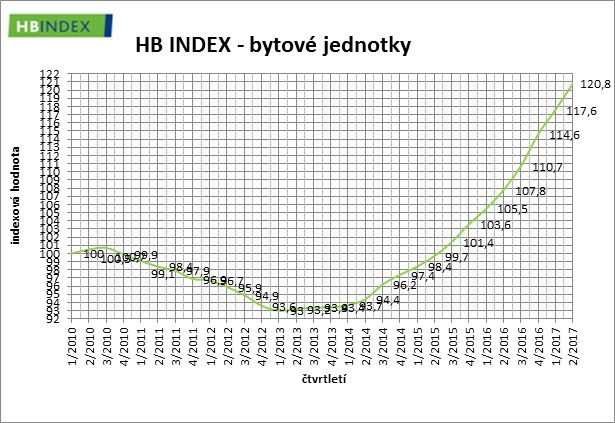
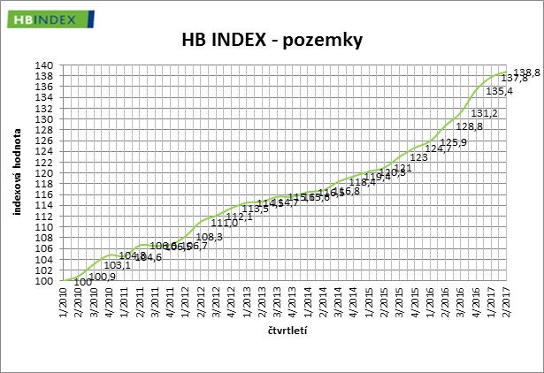
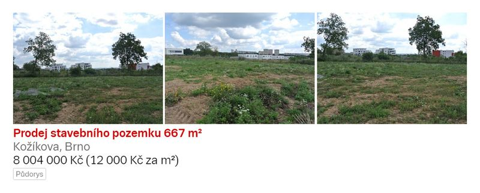

Stavební pozemek jsem začal hledat asi před 2 roky. Hledal jsem hlavně na internetu. Postupně jsem zjišťoval, že najít pěkný pozemek za dobrou cenu nebude snadné. Když už něco vypadalo dobře, byl tam většinou nějaký zádrhel. Měl jsem následující požadavky.
Rozloha alespoň 600 m2. Ideálně okolo 800 m2 obdélníkového tvaru. Minimální šířka pozemku alespoň 20 m. Stačí nám menší pozemek pro samostatně stojící dům se zahradou a s dostatkem soukromí. Příliš velký pozemek by bylo náročné udržovat.
Všechny inženýrské sítě dostupné na pozemku. Elektřina, plyn, voda a kanalizace. Voda se dá řešit vlastní studnou a odpady zase vlastní ČOV či jímkou, ale jsou s tím spojené různé problémy. Mnoho nabízených pozemků nemá inženýrské sítě, ale jsou v blízkém dosahu. Tomu jsme se také raději chtěli vyhnout, protože vybudování sítí je poměrně nákladné a mohou s tím být spojeny další problémy.
Pěkná lokalita. Ideálně v blízkosti přírody a lesa na klidném místě s dostatečným soukromím (slepá ulice). V dostatečné vzdálenosti od rušné silnice, vlakové trati, letiště, průmyslových budov a dalších rušivých elementů. Důležitý je také územní plán, aby poblíž pozemku v budoucnu nevyrostla například dálnice.
Dobrá dopravní dostupnost. MHD, vlak a noční rozjezdy. Dobrá dostupnost do Brna je pro nás velmi důležitá. Nechceme trávit každý den hodiny dojížděním do práce nebo do školy. Preferujeme jízdu vlakem či autobusem oproti dojíždění autem. V centru Brna je problém s parkováním a ve špičce jsou silnice ucpané. Také bychom ocenili nějaké noční spojení (rozjezd).
Vhodná orientace parcely. Ideálně s příjezdovou cestou na severu, aby obývák a zahrada byly orientovány na jih či západ. Raději rovina, než svah.
Občanská vybavenost. Obchod, škola a školka, restaurace, pošta, bankomat, sportovní vyžití, občanské sdružení a zájmové aktivity.
Neriziková oblast. Vyvarovat se záplavovým oblastem, nadměrné vlhkosti, radioaktivitě, kontaminaci půdy, oblastem s nadměrným hlukem apod.
Líbí se mi spíše sever a západ Brna, kde je krásná příroda. Na jihu je průmyslová oblast, dálnice, letiště a žádné lesy. Hledali jsme převážně v těchto lokalitách: Ivanovice, Lelekovice, Mokrá hora, Řečkovice, Soběšice, Kníničky, Bystrc, Líšeň, Komín, Žebětín. Tyto lokality mají relativně dobré dopravní spojení, hezké okolí a jsou blízko Brnu. Líbí se mi i lokality jako Rozdrojovice, Jinačovice, Útěchov, Řícmanice, Ochoz u Brna či Mokrá Horákov, ale tam už je spojení MHD o něco horší. Střelice mají super spojení, v okolí je hezká příroda, ale když jsem se tam byl podívat na kole, přišlo mi, že tam není žádná občanská vybavenost.
Aktuální situace na trhu s nemovitostmi není úplně růžová. Dobře to shrnuje přednáška Realita brněnských realit Jaroslava Kováče z Barcampu Brno 2017. Ceny nemovitostí v ČR jsou velmi vysoko, jelikož je vysoká poptávka a nízká nabídka. To zapříčinilo několik faktorů. Po krizi 2009 se postupně začalo dařit ekonomice. V roce 2014 se obrátil trend s cenami a ty začaly stoupat. Ekonomika roste, je nízká nezaměstnanost a stoupá poptávka po nemovitostech, protože lidé chtějí mít vlastní bydlení. Úrokové sazby klesly pod 3%, hypotéky jsou výhodné. Nabídka je nízká a prodává většinou jen ten, kdo musí. Zároveň není kde stavět. Územní plán města Brna je velmi zastaralý (1994) a nový územní plán má být nejdříve až v roce 2022. Už nyní se však ví, že se to nestihne a nový plán může být až okolo roku 2025. V některých případech došlo k nárůstu cen až o 50% za pouhé 2 roky. Kováč uvádí příklad, kdy v roce 2014 prodal se svojí realitkou byt 3+1 v Lískovci za 2.1M Kč. Podobný byt se stejnými parametry prodal v roce 2016 za 3.1M Kč. Ke konci roku 2016 se však začíná trh s nemovitostmi ochlazovat. Daň z nabytí věcí nemovitých 4% hradí od listopadu 2016 kupující. ČNB začíná regulovat hypotéky a bankám je doporučováno již nedávat 100% úvěr, ale 80% až 90%. Dosud klesající úrokové sazby začínají obracet směr. Poptávka začíná klesat. Co bude dál nikdo neví, ale Kováč se domnívá, že velký propad nehrozí a trh bude spíše stagnovat.


Zdroj: HB index Hypoteční banky
Situace s pozemky je stejná, ne-li ještě horší než s byty. Najít dobrý pozemek je velice těžké. Ceny jsou vysoké a nabídka žalostně nízká. Stavební pozemky v Brně a blízkém okolí zkrátka nejsou a hned tak nebudou. Ceny v námi hledaných lokalitách se obvykle pohybují v rozmezí 5k-8k Kč/m2. Není však výjimkou ani cena 12k. Cena pozemku mnohdy převyšuje předpokládanou cenu samotného domu.

Dlouho se mi nedařilo nic najít. Vždycky tam byl nějaký vroubek. Ke konci už jsem byl tak zoufalý, že jsem chtěl začít poštou obepisovat majitele (adresu majitele lze snadno najít v KN) pěkných pozemků, zda by náhodou ten jejich nechtěli prodat. Naštěstí to nakonec nebylo potřeba. Za celou dobu jsme byli asi na 10 prohlídkách a našli jsme celkem 3 pozemky, které jsme byli ochotni koupit. Dvakrát to nevyšlo a až napotřetí jsme uspěli.
První byl v Brně Ivanovicích. Majitelka prodávala 2 samostatné stavební parcely a nakonec dala přednost jinému zájemci, který projevil zájem o obě parcely. Druhý pozemek jsme však nakonec nekoupili, protože nám majitel těsně před podpisem kupní smlouvy navýšil cenu. K tomu se objevily další problémy a my ztratili důvěru v majitele i realitní kancelář. O tomto bude na blogu samostatný článek. Náš vysněný pozemek jsme našli až na třetí pokus.